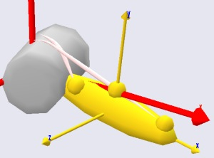
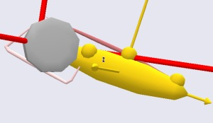

Lesson 4: Wrapping Muscles¶
Caution
Old tutorial: This tutorial has not yet been updated to ver. 7 of the AnyBody Modeling System. Some concepts may have changed.
Many muscles in the body are wrapped over bones and slide on the bony surfaces when the body moves. This means that the contact forces between the bone and the muscle are always perpendicular to the bone surface, and the muscle may in fact release the contact with the bone and resume the contact later depending on the movement of the body. Via point muscles are not capable of modeling this type of situation, so the AnyBody Modeling System has a special muscle object for this purpose.
A wrapping muscle is presumed to have an origin and an insertion just like the via point muscle. However, instead of interior via points is passes a set of surfaces. If the surfaces are blocking the way then the muscles finds the shortest geodetic path around the surface. Hence the name of the class: AnyShortestPathMuscle. The fact that the muscle always uses the shortest path means that it slides effortlessly on the surfaces, and hence there is no friction between the muscle and the surface.
Enough talk! Let us prepare for addition of a wrapping muscle to our
model. If for some reason you do not have a working model from the
previous lessons, you can download one
here.
A wrapping muscle needs one or several surfaces to wrap on, so the frst thing to do is to define a surface. For convenience we shall attach the surface to the global reference frame, but such wrapping surfaces can be attached to any reference frame in the system, including segments. To be able to play around with the position of the surface, we initially define a point on GlobalRef for the purpose:
// Global Reference Frame
AnyFixedRefFrame GlobalRef = {
AnyDrawRefFrame drw = {
RGB = {1,0,0};
};
AnyRefNode M1Origin = {
sRel = {0.0, 0.1, 0};
};
AnyRefNode CylCenter = {
sRel = {0, 0, -0.2};
};
}; // Global reference frame
Having defined the point, we can proceed to create a surface. The wrapping algorithm in AnyBody will in principle work with any sort of surface including real bone surfaces, but for the time being only parametric surfaces are used. The reason is that the bony surfaces are really a lot of small planar triangles, and the corners and edges of the triangles will cause the muscles to slide discontinuously over the surface, which disturbs the analysis result. The parametric surfaces currently available are cylinders and ellipsoids. Let us try our luck with a cylinder. Go to the class tree, locate the class AnySurfCylinder, and insert an instance into the newly defined node on GlobalRef. Then define the name of the cylinder, add an AnyDrawParamSurf statement, and change the cylinder parameters as shown below:
AnyRefNode CylCenter = {
sRel = {0, 0, -0.2};
AnySurfCylinder WrapSurf = {
Radius = 0.15;
Length = 0.4;
AnyDrawParamSurf drv = {};
//CapRatio = 0.100000;
};
};
}; // Global reference frame
Most of this should be self explanatory. However, please notice that the insertion point of the cylinder is at {0, 0, 0.2} corresponding exactly to half of the length of the cylinder of 0.4. This causes the cylinder to be inserted symmetrically about the xy plane as illustrated below:

The cylinder direction is always z in the coordinate direction of the object that the cylinder is inserted into. So, if the cylinder does not have the orientation you want, then the key to rotate it correctly is to control the direction of the AnyRefNode that it is inserted into. In fact, let us rotate it just a little bit to make things a bit more interesting:
AnyRefNode CylCenter = {
sRel = {0, 0, -0.2};
ARel = RotMat(20*pi/180,y);
AnySurfCylinder WrapSurf = {
Radius = 0.15;
Length = 0.4;
AnyDrawParamSurf drv = {};
//CapRatio = 0.100000;
};
};
Which causes the cylinder to rotate 20 degrees about the y axis.

There are a couple of things to notice about the cylinder: First of all the graphics looks like the cylinder is faceted. This is not really the case. Graphically it is displayed with facets out of consideration of the efficiency of the graphics display, but from the point-of-view of the muscle it is a perfect cylinder. The second thing to notice is that the ends are capped in such a way that the edges are rounded. You can control the curvature of this cap by means of the CapRatio variable that is currently commented out in the cylinder object definition. If you play a bit around with different values of the cap ratio then you will quickly get a feel for the effect of the variable. The caps allow you to let the muscle wrap over the edge of the cylinder if necessary.
The next step is to define a wrapping muscle. We shall create one point on the global reference frame and one point on the arm, and we can then articulate the joint and study the behavior of the wrapping algorithm. The point on the global reference frame is added like this:
// Global Reference Frame
AnyFixedRefFrame GlobalRef = {
AnyDrawRefFrame drw = {
RGB = {1,0,0};
};
AnyRefNode M1Origin = {
sRel = {0.0, 0.1, 0};
};
AnyRefNode M2Origin = {
sRel = {0.0, 0.15, -0.05};
};
Similarly we add a point to the arm:
// Define one simple segment
AnySeg Arm = {
r = {0.500000, 0.000000, 0.000000};
Mass = 1.000000;
Jii = {0.100000, 1.000000, 1.000000}*0.1;
AnyRefNode Jnt = {
sRel = {-0.5, 0.0, 0};
};
AnyRefNode M1Insertion = {
sRel = {0.3, 0.05, 0};
};
AnyRefNode M2Insertion = {
sRel = {-0.2, 0.05, 0.05};
};
Notice that we have given the origin and insertion points a bit of offset in the z direction to make the problem a bit more exciting. The offset will cause the muscles to cross the cylinder in a non-perpendicular path to the cylinder axis such as for instance the pronator muscles of the human forearm do.
It is now possible to define the muscle wrapping over the cylinder. The easiest way to do it is to make a copy of the via point muscle, Muscle1, and then make the necessary changes:
AnyViaPointMuscle Muscle1 = {
AnyMuscleModel &Model = .SimpleModel;
AnyRefFrame &Orig = .GlobalRef.M1Origin;
AnyRefFrame &Via = .Arm.ViaPoint;
AnyRefFrame &Ins = .Arm.M1Insertion;
AnyDrawMuscle drw = {
//RGB = {0.554688, 0.101563, 0.117188};
//Opacity = 0.2;
//DrawOnOff = 1;
Bulging = 2;
ColorScale = 1;
//RGBColorScale = {0.957031, 0.785156, 0.785156};
MaxStress = 250000;
};
};
AnyShortestPathMuscle Muscle2 = {
AnyMuscleModel &Model = .SimpleModel;
AnyRefFrame &Orig = .GlobalRef.M2Origin;
AnySurface &srf = .GlobalRef.CylCenter.WrapSurf;
AnyRefFrame &Ins = .Arm.M2Insertion;
SPLine.StringMesh = 20;
AnyDrawMuscle drw = {
Bulging = 2;
ColorScale = 1;
MaxStress = 250000;
};
};
The two muscles are very similar in their definitions. They both have an origin and an insertion, and they are both displayed on the screen by means of the same type of drawing object. Notice that if you have many muscles in a model and you want to have an easy way of controlling the display of all of them, then you can define the drawing object in an include file, and include that same file in the definition of all the muscles. This way, when you change the display definition in the include file, it influences all the muscles simultaneously.
The difference between the two definitions is that the via point of Muscle1 has been replaced by a wrapping surface in Muscle2. Shortest path muscles can have any number of wrapping surfaces specified in sequence just like via point muscles can have any number of via points. In fact, a shortest path muscle can also have via points as we shall see later.
There is one additional specification necessary for a shortest path muscle. The line:
SPLine.StringMesh = 20;
This line generates a sequence of 20 equidistant points on the shortest path muscle, and these are the points that are actually in contact with the wrapping surface(s). More points will give you a more accurate solution, but they also require more computation time. For shortest path muscles the computation time can be an important issue. Solving the shortest path problem is a matter of contact mechanics, and with many muscles in the model this is easily the more computationally demanding operation of all the stuff that the system does during an analysis. If you have too few points and a complex case of wrapping, the system may sometimes fail to solve the wrapping problem and exit with an error. In that case the solution is to increase the number of points.
It is time to see what we have done. If you load the model and run the InverseDynamicAnalysis (and have done everything right), you will see the model moving through a sequence of positions like this:

As mentioned above, wrapping muscles can also have via points. In fact, we can easily change the via point muscle, Muscle1, to wrap over the cylinder even though it also has a via point:
AnyShortestPathMuscle Muscle1 = {
AnyMuscleModel &Model = .SimpleModel;
AnyRefFrame &Orig = .GlobalRef.M1Origin;
AnyRefFrame &Via = .Arm.ViaPoint;
AnySurface &srf = .GlobalRef.CylCenter.WrapSurf;
AnyRefFrame &Ins = .Arm.M1Insertion;
SPLine.StringMesh = 20;
AnyDrawMuscle drw = {
Bulging = 2;
ColorScale = 1;
MaxStress = 250000;
};
};
The definition of the two muscle types is very similar, so we only had to change the type from AnyViaPointMuscle to AnyShortestPathMuscle and insert the wrapping surface and the StringMesh specification. This gives us the following result:

As you can see, both muscles are now wrapping over the cylinder, and we can run the InverseDynamicAnalysis. It seems to work, but the system provides the following warning:
WARNING - Via-point 'Main.MyModel.GlobalRef.M1Origin' on
'Main.MyModel.Muscle1.SPLine'
is located below the wrapping surface
'Main.MyModel.GlobalRef.CylCenter.WrapSurf'.
This is a warning that you will see rather frequently when working with complex models with wrapping. The warning comes when one of the end points or a via point is located below the surface over which the muscle is supposed to wrap. This means that it is impossible for the muscle to pass through the via point without penetrating the wrapping surface. In this case the system chooses to let the muscle pass through the via point and the back to the wrapping surface as soon as possible. In the present case, the origin point of Muscle1 is only slightly below the cylinder surface, so the problem can be rectified by a small offset on the origin point:
AnyRefNode M1Origin = {
sRel = {0.0, 0.15, 0};
};
If you are analytically inclined, you may be thinking that the muscles might equally well pass on the other side of the cylinder. And you are quite right. The reason why both muscle pass over the cylinder rather than under is that this is the side that is the closest to the muscles’ paths before the wrapping is resolved. This means that we can make a muscle wrap on another side of a wrapping surface by making sure that its initial position is closer to the side we want it to wrap on. The way to do this is to specify one or more so-called initial wrapping vectors. These are really points that the muscle initially should pass through. You can specify as many of these points as you like. In the example below we have used two:
AnyShortestPathMuscle Muscle2 = {
AnyMuscleModel &Model = .SimpleModel;
AnyRefFrame &Orig = .GlobalRef.M2Origin;
AnySurface &srf = .GlobalRef.CylCenter.WrapSurf;
AnyRefFrame &Ins = .Arm.M2Insertion;
SPLine.StringMesh = 20;
SPLine.InitWrapPosVectors = {{-0.2, -0.2, 0}, {-0.05, -0.2, 0}};
AnyDrawMuscle drw = {
Bulging = 2;
ColorScale = 1;
MaxStress = 250000;
};
};
Notice that the InitWrapPosVectors like the StringMesh is part of an object called SPLine. This is an object in its own right that gets defined automatically inside a shortest path muscle. It is a special kind of kinematic measure that is really a string that wraps just like a muscle but does nothing else than measure its own length. These objects can be used outside the muscle definition for various purposes in the model, for instance for definition of springs or rubber bands.
After you load the model with the added InitWrapVectors, try using the Step button rather than the run button. This will show you how the system uses the InitWrapVectors to pull the muscle to the other side of the cylinder:

If you keep pressing the step button you will see how the muscle now wraps on the other side of the cylinder.
With the kinematics of muscles well under control, we can proceed to another important and interesting topic, Lesson 5: Muscle models.
See also
Next lesson: Lesson 5: Muscle Models.